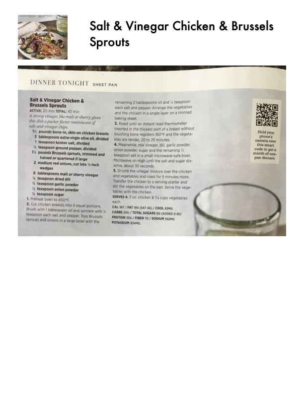

Salt & Vinegar Chicken & Brussels Sprouts

Original cookbook page 52
A strong vinegar dip turns cherry glaze into that of a jacket to complement Brussels sprouts with salt-and-vinegar chips.
Prep: 45 minutes • Total: 45 minutes
Ingredients
- 1 1/2 pounds bone-in, skin-on chicken breasts
- 1 pound Brussels sprouts, trimmed and divided
- 1 teaspoon kosher salt, divided
- 1 teaspoon ground pepper, divided
- 3 tablespoons malt vinegar, divided
- 2 medium red onions, trimmed and halved or quartered if large
- 2 tablespoons extra-virgin olive oil
- 1 teaspoon garlic powder
- 1 teaspoon onion powder
- 1/2 teaspoon smoked paprika
Instructions
- Preheat oven to 450°F.
- Cut chicken breasts into 4 equal portions. Brush with 1 tablespoon oil and sprinkle with 1/2 teaspoon each salt and pepper. Toss Brussels sprouts and onions in a large bowl with the remaining 2 tablespoons oil and 1 teaspoon each salt and pepper. Arrange the vegetables and the chicken in a single layer on a rimmed baking sheet.
- Roast, without stirring until thermometer inserted in the thickest part of a breast without touching bone registers 160°F and the vegetables are tender, 20 to 25 minutes.
- Meanwhile, mix vinegar, oil, garlic powder, onion powder and smoked paprika in a small microwave-safe bowl. Microwave on high until the salt and sugar dissolve, 1 to 2 minutes.
- Drizzle the vinegar mixture over the chicken and vegetables and roast for 3 minutes more. Transfer the chicken to a serving platter and stir the vegetables on the pan. Serve the vegetables alongside the chicken.
Recipe #52 from collection